typography through the ages

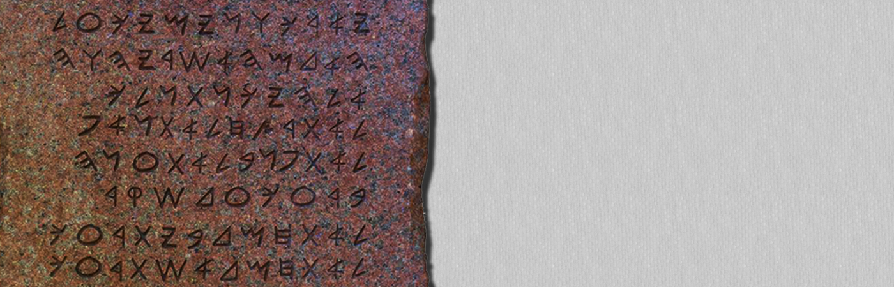
- Hebrew script engraved on stone tablets.

- Greek script engraved on stone tablets.
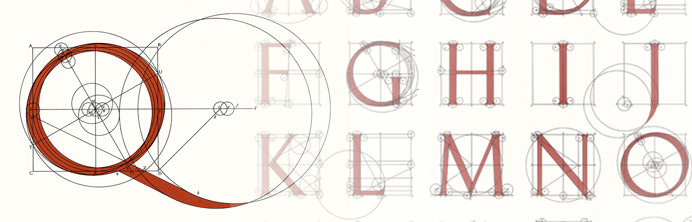
- Romans start using geometry to form alphabets.
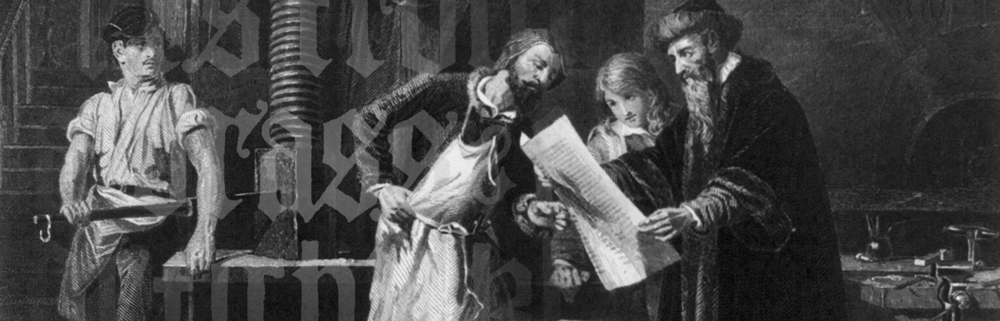
- Johann Gutenberg invents movable type
- Printing is born
- The font is known as blackletter
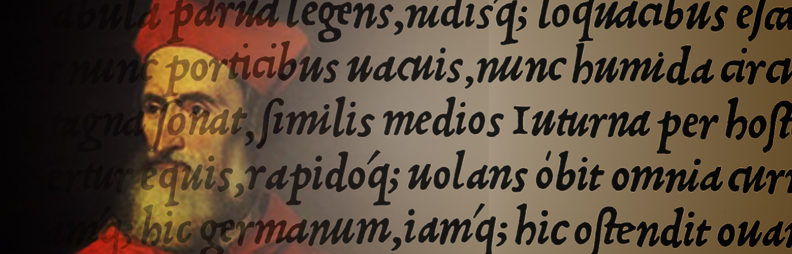
- Fracesco Griffo creates the first italic typeface. It is based on chancery handwriting.
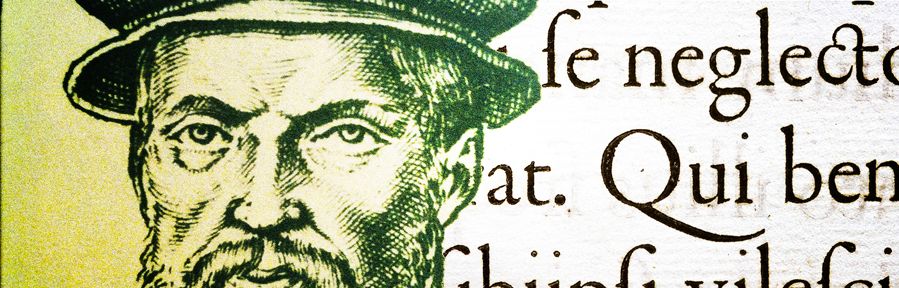
- Claude Garamond created typeface in France and based it on roman font of Griffo

- Philippe Grandjean creates Romain du Roi, the first transitional typeface of the eighteenth century
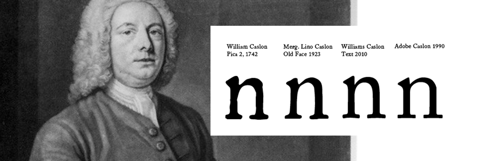
- William Caslon creates Old Style typefaces which are the model for several typefaces in use today
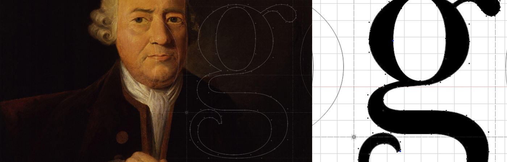
- John Baskerville creates transitional typefaces
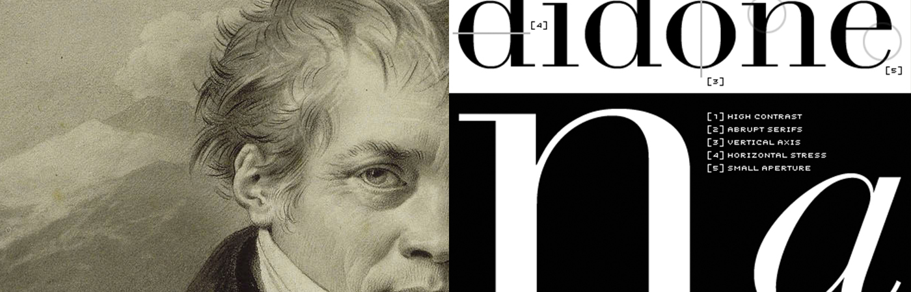
- Francois Ambroise Didot creates the first true modern style typeface
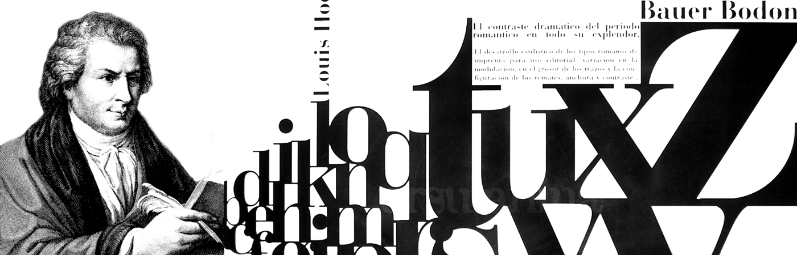
- Giambattista Bodoni creats revolutionary modern style typefaces
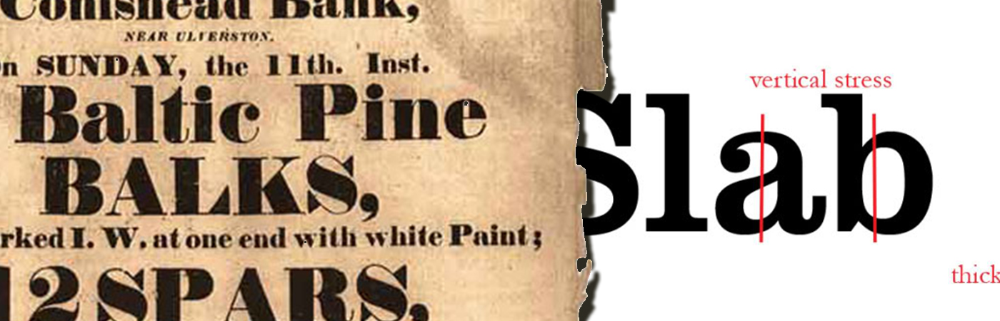
- The Industrial Revolution brought steam power to printing presses
- Robert Thorne designs the first Fat Face
- Vincent Figgins designs the first slab-serif typeface
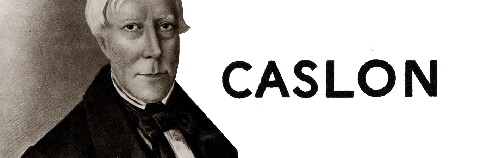
- William Caslon IV designs the first sans serif typeface
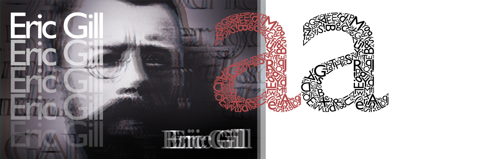
- Eric Gill designs Gill Sans
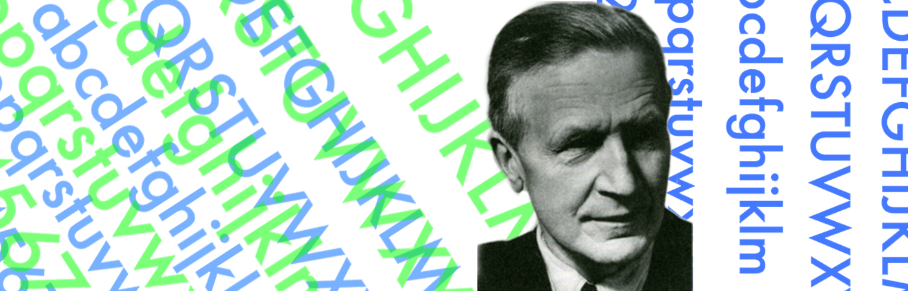
- Paul Renner releases prospectus for Futura typeface
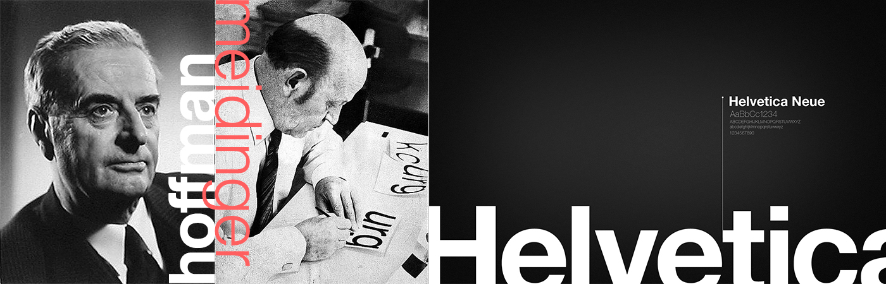
- Max Miedinger and Eduard Hoffmann design Helvetica
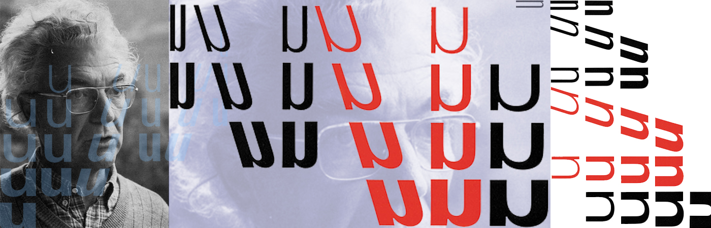
- Adrian Frutiger makes Univers commercially available
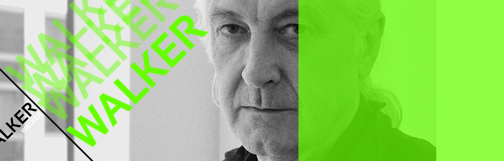
- Mathew Cater designs Walker for the Walker Art center